Resolving organoid brain region identities by mapping single-cell genomic data to reference atlases
Prof. Dr. Barbara Treutlein
Voxhunt
- a set of computational tools to assess brain organic patterning, developmental state, and cell identity through comparisons to spatial and single-cell transcriptome reference datasets.
1. Introduction
- There are 2 strategies for producing brain organoid
- Self- patterning strategy: Guiding PSCs to form a layer of neuroepithelial stem cells which can differentiate into neurons
- Direct strategy : Using Signaling molecules or directive cues to control patterning of the neuroepithelium (Batch에 따른 difference 보정하기 위해)
- Despite incredible progress in human brain organoid engineering, it is not yet possible to create a stereotypic organoid containing multiple brain structures to study neuronal migration or enable formation of inter-region neuronal connections
- scRNA-seq has emerged to deconstruct organoid cell composition and reconstruct differentiation trajectories
- direct comparison btw engineered in vitro cortical structures(organoid) and primary in vivo counter parts(human brain?) has revealed remarkable similarity in gene expession profiles
- But it still remains a major challenge to interpret the gene expression and regulatory patterns in organoid sc data
⇒ Here, we introduce Voxhunt to assess brain organoid patterning, developmental state, and cell identity comparing with annotated reference datasets(Figure1)
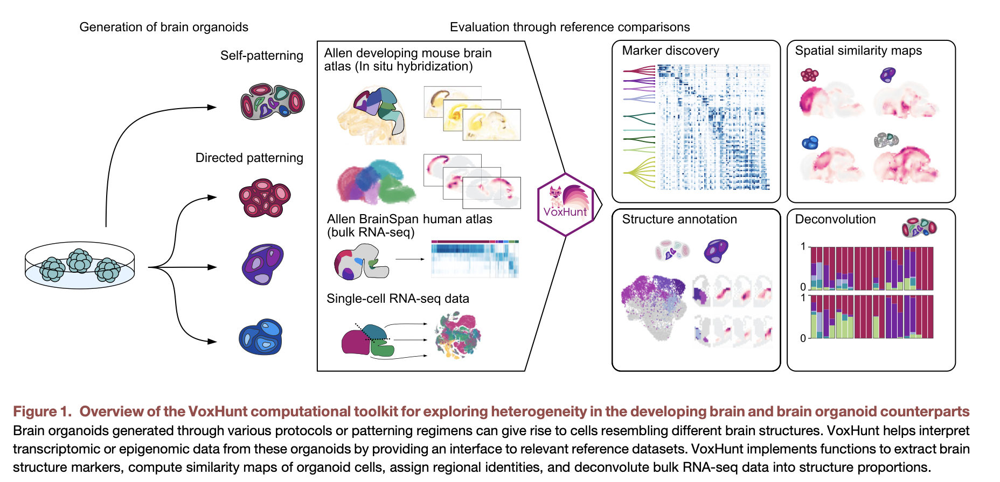
Figure 1 - scRNA-seq has emerged to deconstruct organoid cell composition and reconstruct differentiation trajectories
- Figure 1. Voxhunt
- in situ hybridization data(Allen Mouse Brain Atlas)의 voxels로 mapping해서 organoid의 regional composition을 파악한다
(voxels: 3D positions rendered from spatial transcript patterns)
- human microdissected brain structures(BrainSpan) 로부터 얻은 bulk-RNAseq or Developing mouse brain scRNA-seq data과 비교를 수행할 수 있는 interface를 제공
- Voxhunt can help deconvolute organoid bulk RNA data and can assess 다른 condition에서의 regional composition 차이
→ Spatial, Single cell, Bulk data를 사용하여 Organoid regional composition을 확인할 수 있는 Voxhunt
- in situ hybridization data(Allen Mouse Brain Atlas)의 voxels로 mapping해서 organoid의 regional composition을 파악한다
2. Result
Spatiotemporal voxel maps of the developing mouse brain
- 사용한 reference data set
: in situ hibridization data of the mouse brain in 8 different developmental stages(Figure 2A) from the Allen Developing Mouse Brain Atlas
- 4D reference atlas of mamalian brain
- 다른 experiment에 따른 embryonic day 11.5(E11.5) ~ postnatal day 56까지의 diffrerent timepoint에 대한 gene expression
- each voxels(80~200µm) is annotated with a brain structure(derived from a hierarchical structure ontology)
- preprocessing in situ hybridization(ISH) data
- ISH: 특정 유전자의 조직내 발현과 위치를 시각화
→ 여러 experiment에서 얻은 gene들에 대한 ISH 데이터를 요약해 분석 진행(각 voxel에서 유전자 발현을 단일 벡터로 요약)
- 발달 단계에 따라 변하는 뇌의 구조와 크기에 영향을 받지 않고 유사한 크기를 유지하며 비교하기 위해 additional layer(ontological level에 따른 structural annotation) 추가 → 발달 단계와 공간 위치에 따라 세밀하게 annotation하여 일관된 비교를 가능하게 함
- ISH: 특정 유전자의 조직내 발현과 위치를 시각화
Brain structure marker identification
- annotated된 brain structure에 대해 DE analysis를 수행하고
- the single-feature area under the receiver operating characteristic curve(AUROC) 를 사용
- the single-feature AUROC: a metric for selecting structure-specific genes with spatially confined expression
- 여러 특성 중 하나의 특성이 두 그룹을 얼마나 잘 구분하는지
- 특정 유전자의 발현 수준이 두개의 뇌 구조를 얼마나 잘 구분하는지
- 높은 AUROC값 → 그 유전자가 두 그룹을 잘 구분하고 있음
- the single-feature AUROC: a metric for selecting structure-specific genes with spatially confined expression
- 이 결과로 stage, structure에 맞는 feature selection을 할 수 있고, marker gene으로 사용할 수 있다
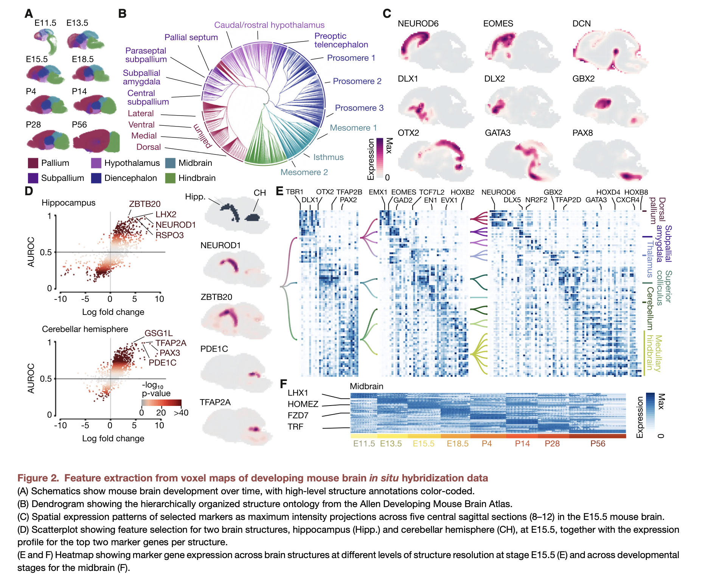
Voxhunt accurately maps reference populations
- single cell data로 mapping(split-pool barcoding developing mouse brain, Rosenberg et al., 2018)
- voxelized structures에 mouse-mouse annotated cell population mapping됨(Figure S2A)
- Accuracy: structure에 정확하게 assign된 Cell 비율
- Contrast: 할당된 구조와의 유사도를 두번째로 유사한 구조의 유사도로 나눈 비율 → 높은 점수일수록 두번째 구조보다 더 유사하다
→ 다른 condition에서의 Feature selection을 통한 Accuracy와 Contrast 확인하고 downsampling된 scRNA-seq data를 통한 structure assignment의 안정성을 확인
→ feature 수가 많을 수록 정확도 높아졌다
→ Pallium과 같은 region에서는 Contrast가 너무 높거나 낮은 feature 수에서 감소하는 경향을 보임
→ Rostral midbrain과 같은 특정 region에서 Accuracy가 UMI count에 영향을 받았다
⇒ Accuracy와 Contrast를 높게 할 수 있는 optimal parameter를 설정했다 그리고 Bulk RNA-seq of Developing Human Brain Atlas(Thompson et al,2014;Kanton et al., 2019)와 scRNA-seq data of primary human brain tissue(Fan et al., 2018)을 사용해보았을 때 clear similarity pattern을 확인할 수 있었다
Organoid region composition annotation
- 서로 다른 protocol로 만들어진 organoid로부터 unsupervised annotation이 잘 되는지 확인
- 3 brain-structure-specific organoid protocols(thalamus, cortex, ventral telencephalon) + 1 cerebral(unpatterned) scRNA-seq data수집
- from Birey et al., 2017; Xiang et al., 2018
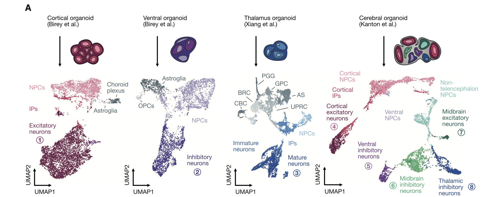
- Datas include heterogeneous progenitor and neuronal cells
- 네개의 스터디가 다양한 cell population을 보이고 있음
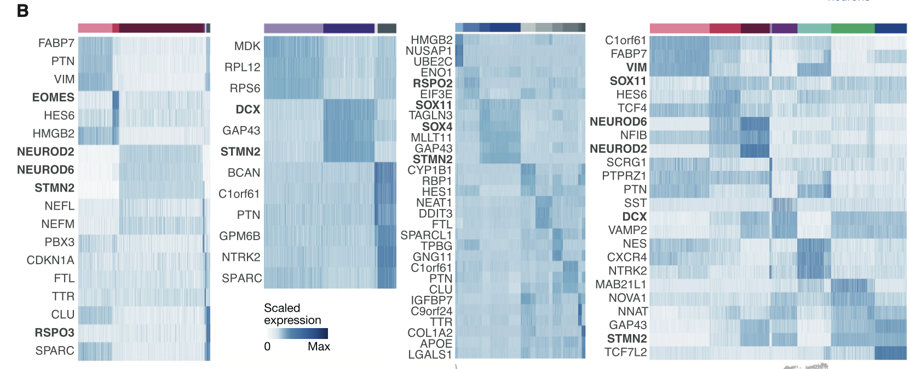
- Canonical marker gene으로 structure-specific organoid의 Neuronal cells에 대한 patterning 진행
- 특히 Cerebral organoid에서 telencephalon, diencephalon와 같은 다양한 뇌 영역으로부터 유래한 neuronal cell이 나타났고 이는 이 논문에서 이전 연구의 annotation과 일치한다
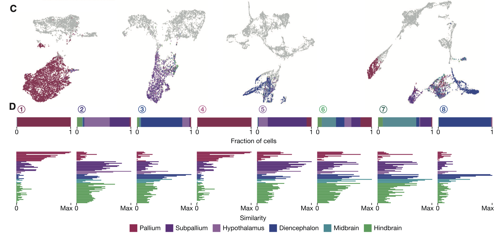
- Telencephalon, diencephalon, midbrain, hindbrain에서 time에 따라 일관되게 나타나는 Annotation이 정확한지 확인하기 위해 각 Neuronal cluster에서 얻은 sc data를 mammalian(포유류) 뇌의 in situ expression pattern과 비교
→ Cortical 또는 Cerebral organoid에서 Cortical neuron으로 annotation된 Cell들이 다른 structure보다 pallium(Cerebral cortex)과 강한 correlation을 갖는걸 알 수 있었다
→ Cerebral organoid에서 생성된 midbrion neuron(Cluster6)의 경우 일관된 correlation이 보이지 않았지만, 각 Cluster별 평균 correlation이 midbrain이 가장 높아 Midbrain excitatory neuron으로 annotation
Spatial projection of organoid cell transcriptomes
- 각 Cluster에 해당하는 developmental stage 확인을 위해 E11.5~E18.5에 해당하는 Fetal developmental stage에 걸친 structure와 cluster 내의 각 Cell의 correlation을 확인함
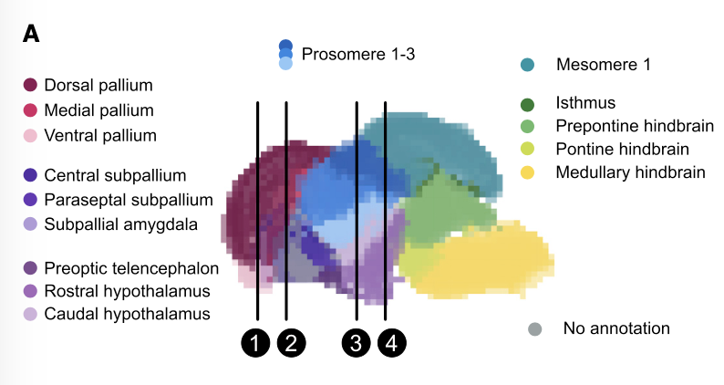
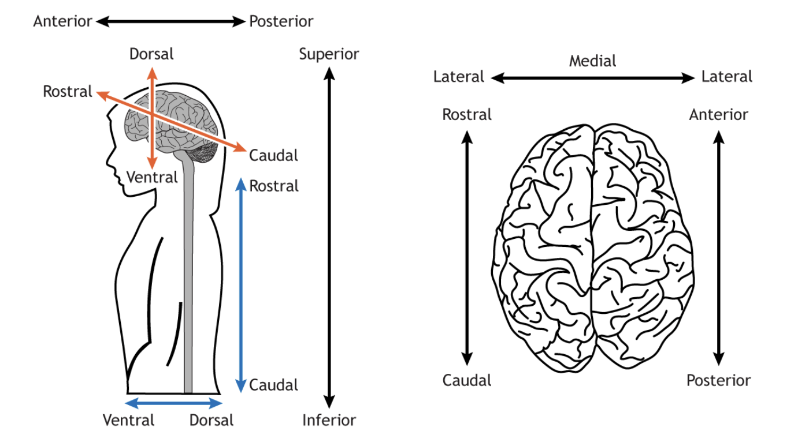
- Thalamic neuron clusters를 제외하고 대부분이 E13.5에 가장 큰 평균 correlation을 가졌다.( Thalamic은 E11.5)
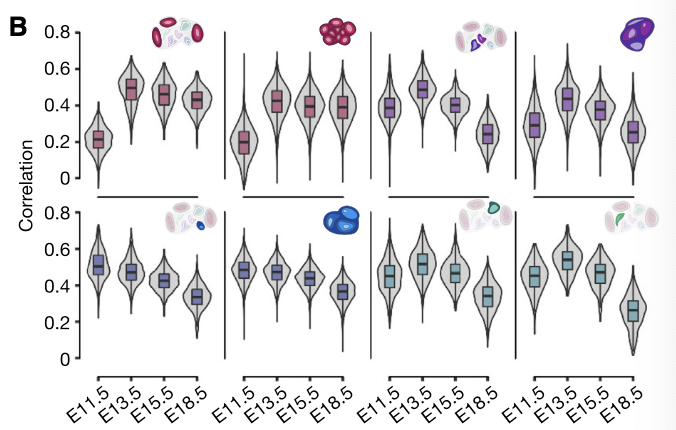
- Cortical neuron의 경우 organoid origin에 따른 age와 유사했다
- 각 oragnoid cluster에 대한 각 voxel에서의 correlation을 sagittal view or 2dim-coronal로 visualization했다
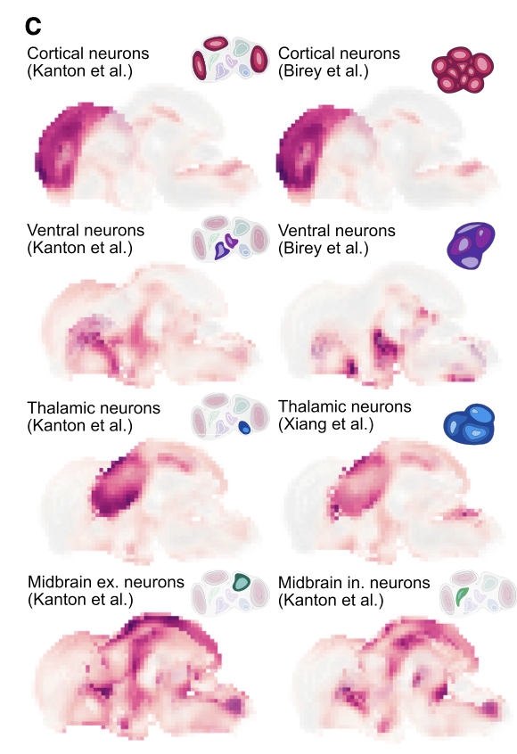
Sagittal projection 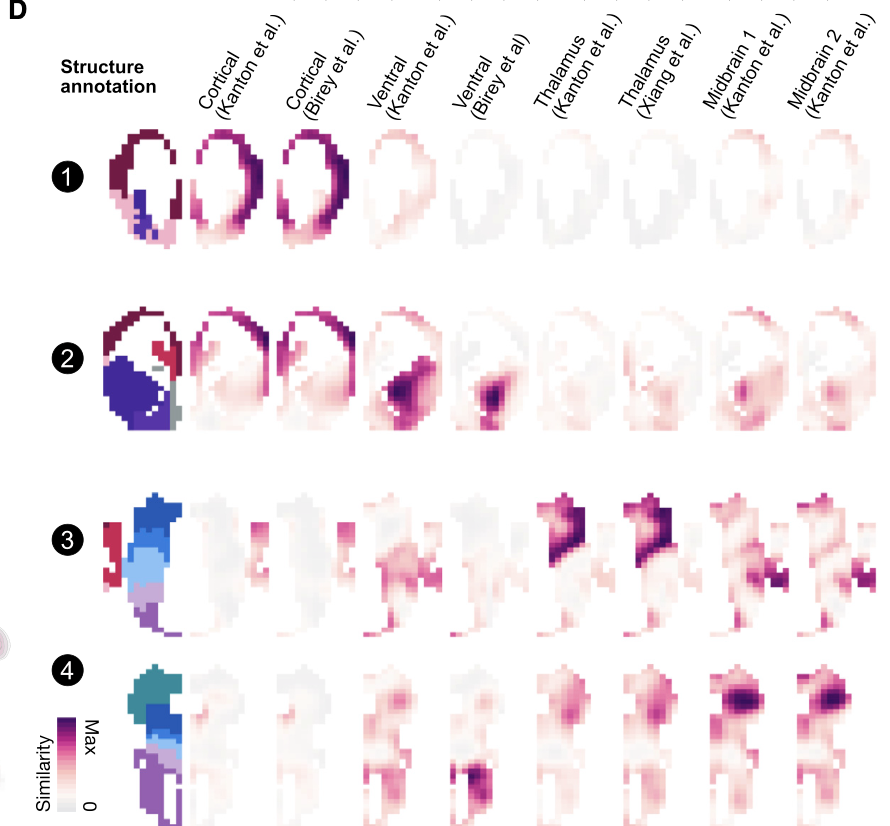
two-dimensional coronal sections Description
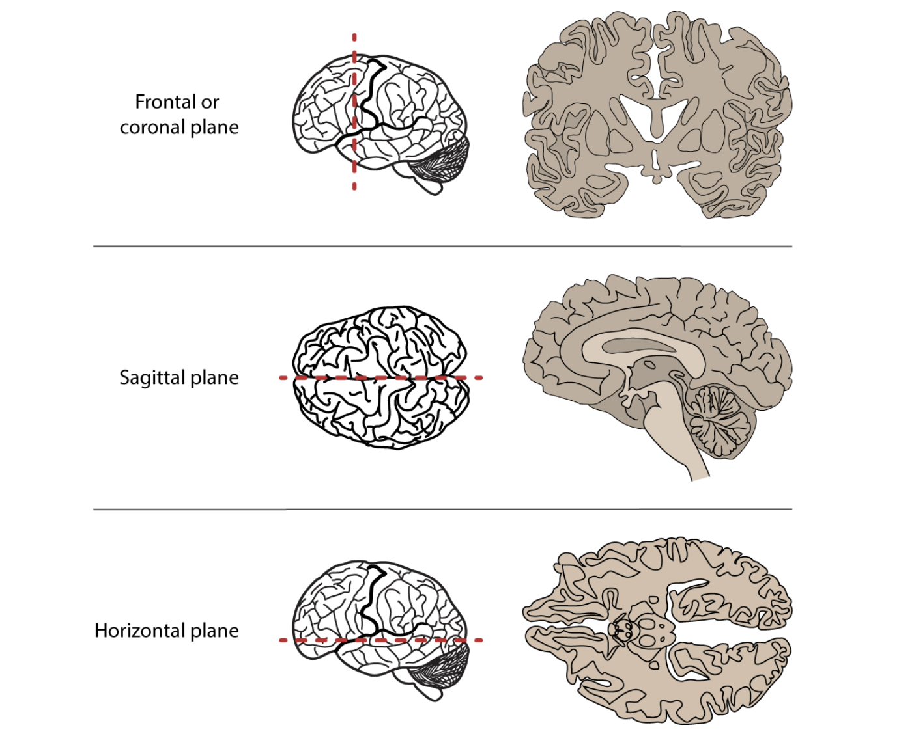
- 개별 organoid의 Cell-type composition을 평가하기 위해 brain spatial location에 organoid 각 Cell을 뿌려봄(based on maximum similarity to loci within the voxel maps)
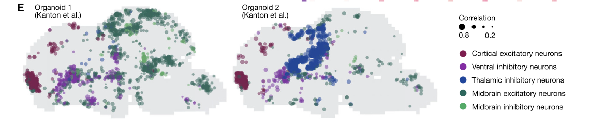
→ voxel maps에서 가장 유사성이 높은 loci를 base로 하여 Individual organoid의 cell-type composition을 평가하기 위해 각 cell을 spatial location에 projection
→ These analyses reveal the spatial location within the brain tissue where each cluster or cell has maximal correlation, which can be used to assess the specificity of the regional neuronal population and help annotate previously unknown cell populations
- Thalamic neuron clusters를 제외하고 대부분이 E13.5에 가장 큰 평균 correlation을 가졌다.( Thalamic은 E11.5)
Complementary reference datasets as high-dimensional search spaces
- ISH data로 structural annotation한 것이 다른 reference dataset에도 확장이 될 수 있는지 확인해보기 위해서 time course bulk RNA-seq data(from human brain(BrainSpan))과 developing mouse brain sc atlas(La Manno et al.,2020)을 사용해봄
→ sc Atlas사용해봤을 때 ISH 단일로 사용했을 때 파악하지 못했던 early mammalian brain development에 대한 Functional annotation을 수행할 수 있었음
- We found that organoid-derived cortical neurons showed the highest similarity to excitatory neurons, while ventral neurons mapped to inhibitory(GABA-ergic) neurons
- 이전에 Unknown하던 cluster에 대한 annotation을 한 몇개의 예시들 더 있음(Supple data로 넣은듯)
Assessing region specificity across organoid protocols
- 다른 protocol로 만든 organoid들의 cell identity를 평가하기 위해 Voxhunt를 사용해봄
- 사용한 organoid
- Bhaduri et al., 2020; Birey et al., 2017; Giandomenico et al., 2019; Kanton et al., 2019; Pellegrini et al., 2020; Pollen et al., 2019; Velasco et al., 2019; Xiang et al., 2018
- 사용한 organoid
→ 결과적으로 spatial하게 유사하게 mapping되는 걸 확인할 수 있었고 original annotation과 유사하게 region identitiy도 할당됨.
Annotating organoid cell identity at substructure resolution
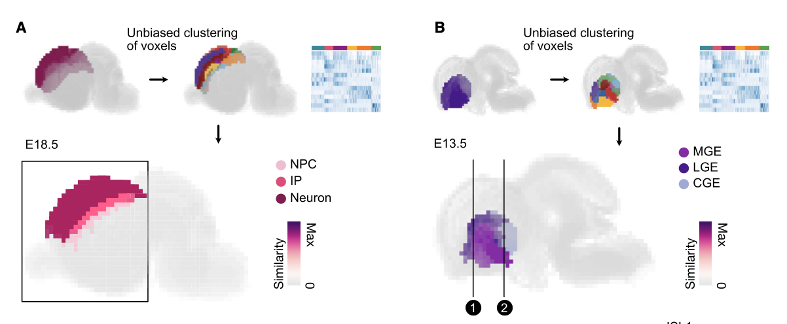
- ABA (Allen Brain Atlas)에서 제공하는 Structural layer(ontology) 정보를 넘어 더 세밀한 수준에서 organoids의 Cell type을 더 resolution 높게 annotation하려고 시도
- the dorsal pallium and the subpallium(상위 structure)를 골라서 voxel에 대한 unbiased clustering을 진행(Fig 5A,B)
- canonical marker gene expression을 기반으로
- NPC(Neural Progenitor cells), IP(Immediate progenitor), Neuronal layers in Dorsal Pallium을 구분하고
- Caudal ganglionic eminences(LGE,MGE,CGE) in Subpallium
을 구분
- 이러한 custom annotation을 sc data (mice(Loo et al., 2019; Mayer et al., 2018))과 비교해보았을 때 매칭되는걸 확인할 수 있었다
- 또한 예상한 것과 같이 Anatomic position과 morphology도 보였다(Fig 5C,5D)
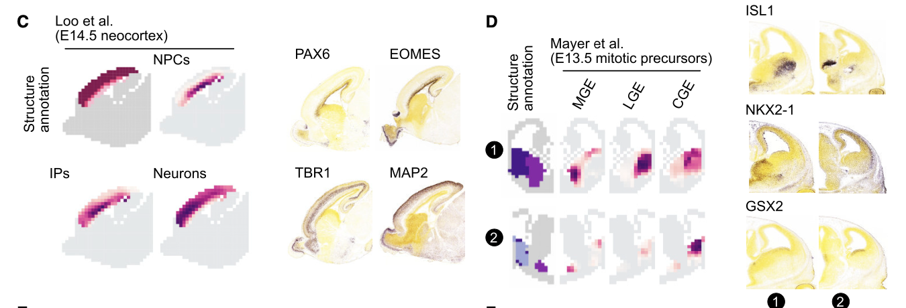
- We found that organoid cells from the cortical trajectory clearly mapped onto the annotated pallial zones (Figure 5E).
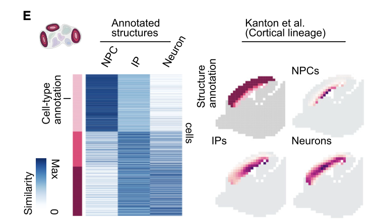
Fig 5E - Cortical lineage 그림 설명 필요
- Moreover, ventral neuron clusters from cerebral organoids could be clearly annotated as LGE-, MGE-, or CGE-like interneurons based on their similarities to the substructures (Figure 5F).
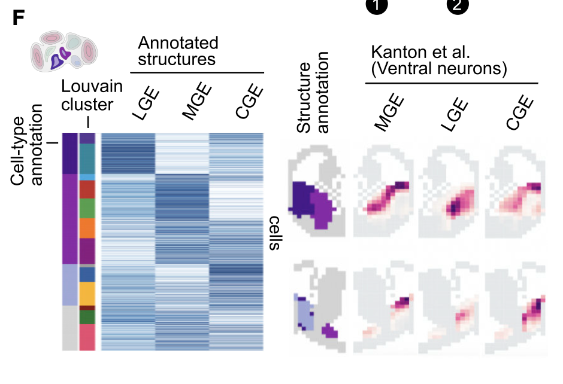
→ 그래서 이 새로운 annotated subpallial structure를 이용하여 3가지의 protocol(Birey et al., 2017; Kanton et al., 2019; Xiang et al., 2017)로 만들어진 organoid들의 Inhibitory neurons들을 파악하고 heterogenetiy를 비교하는데 사용했다((Figures S6G–S6M)에 결과 있음)
- We note that these results may be confounded by maturation differences, and further analysis would benefit from availability of time-course data from human samples.
Spatial mapping of chromatin accessibility data
- scATAC-seq data에서도 비슷한 분석이 가능한지 살펴봤다
- 동일한 cell suspension(microdissected regions from 2 to 4 month cerebral organoids (Kanton et al., 2019))으로 진행한 scATAC-seq과 scRNA-seq pair 사용
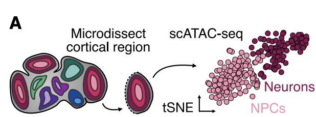
Fig.6A - in situ hybridization atlas의 각 gene들의 TSS(Transcription start site)에서의 Accessibility score를 측정
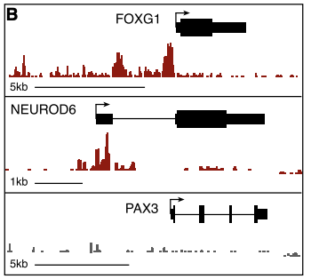
Fig.6B - 그러고 나서 TSS access와 expression의 Spatial 상에서 annotated된 structure 간의 correlation을 계산했다
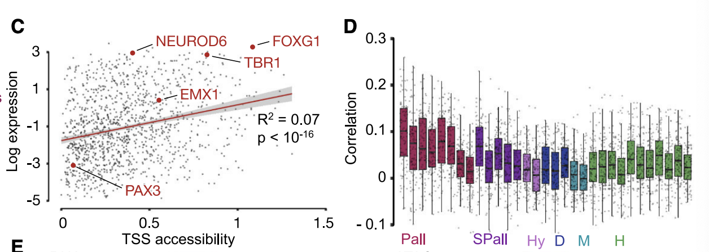
- correlation을 3D voxel map에 나타내보았을 때“both transcriptomes and chromatin accessibility scores of neuronal cells from the microdissected region have the highest correlation with the developing cortex (Figure 6E).”
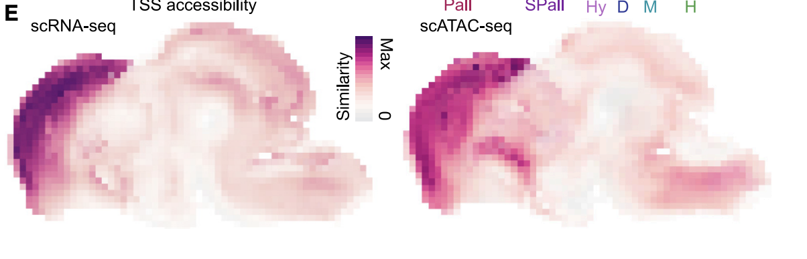
- 동일한 cell suspension(microdissected regions from 2 to 4 month cerebral organoids (Kanton et al., 2019))으로 진행한 scATAC-seq과 scRNA-seq pair 사용
Assessing organoid patterning using multiplexed transcriptomics and reference mapping
- Reference-mapping organoid transcriptomes가 어떻게 culture condition manipulations output을 평가하는데 사용될 수 있을까?
- proof-of-principle experiment in which we incubated developing organoids with several different patterning molecules
- R-spondin 2 (RSPO2), R-spondin 3 (RSPO3),
- sonic hedgehog (SHH)
- an activator of the Wnt pathway (CHIR99021)
- two small molecules for dual SMAD inhibition (SB431542 and dorsomorphin)
- low, high 로 처리되었으면 Control 있음
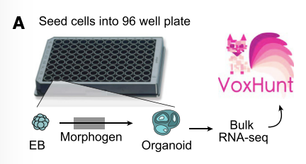
Fig.7A 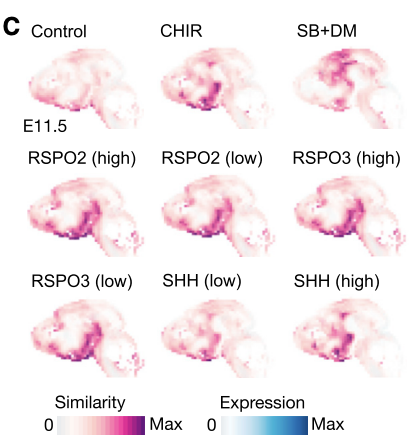
Fig.7C
- proof-of-principle experiment in which we incubated developing organoids with several different patterning molecules
- PCA를 해보았을 때, 이러한 morphogen treatment에 의한 transcriptome heterogeneity를 유도했음을 알 수 있고, 유사한 condition에서 생성된 organoid끼리 가까이 있는 것을 확인할 수 있음
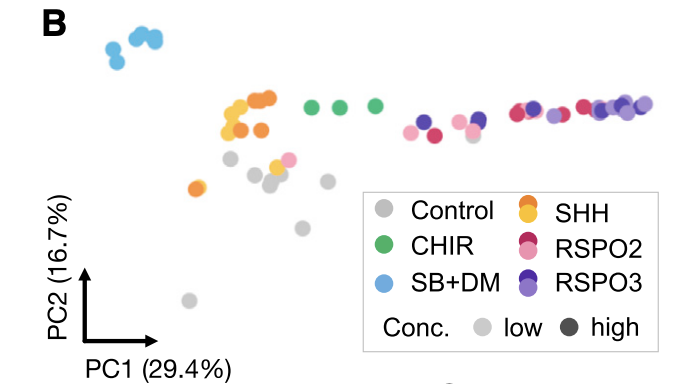
- 다음으로 ABA developing moouse brain ref.(E11.5)에 매핑해서 각 bulk transcriptome을 각 voxel에 대한 correlation을 확인해보았고, condition 간 차이를 확인함
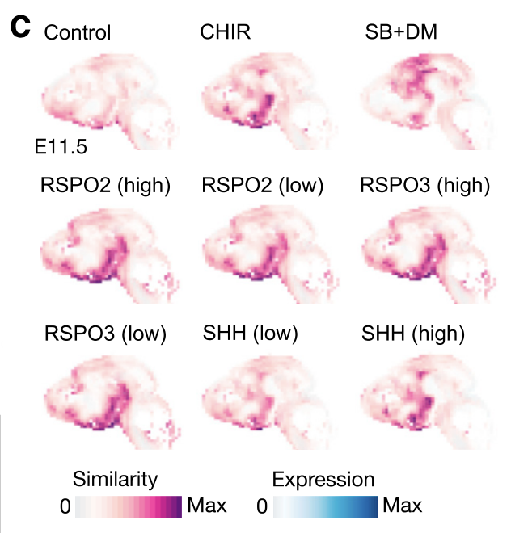
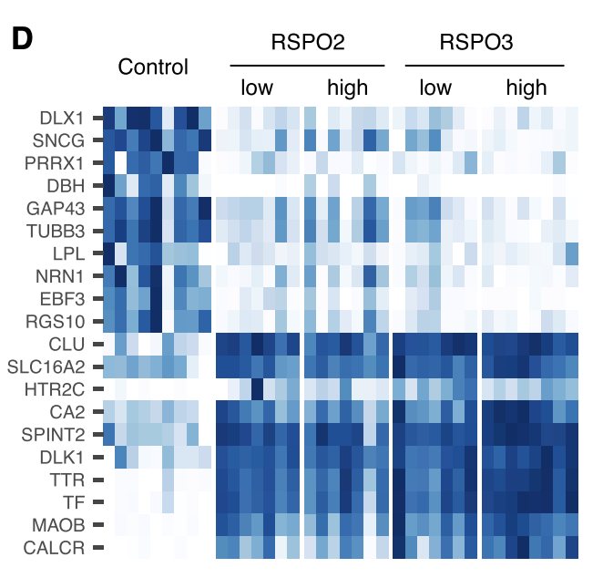
Heatmap showing the expression of differentially expressed genes between control and R-spondin conditions - 특히 RSPO2/3 patterning molecule의 경우 Telencephalon과 Diencephalon 경계부위와 관련된 구조(ChP)에서 확인됨
- ChP 형성과 관련된 TTR, CLU, HTR2C가 DEG로 관측됨 근데 RSPO2/3가 ChP 형성을 어떻게 유도하는지는 명확하지 않으며, 관련 수용체(LGRs)는 ABA에서 탐지되지 않음
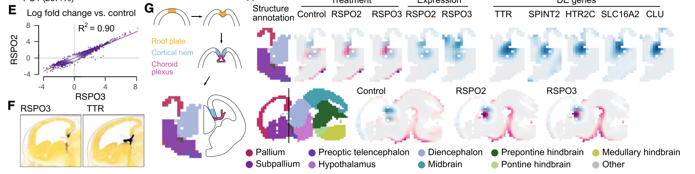
3. Discussion
Limitations of study
- Whole brain에 대한 single cell 수준의 spatial reference가 부족